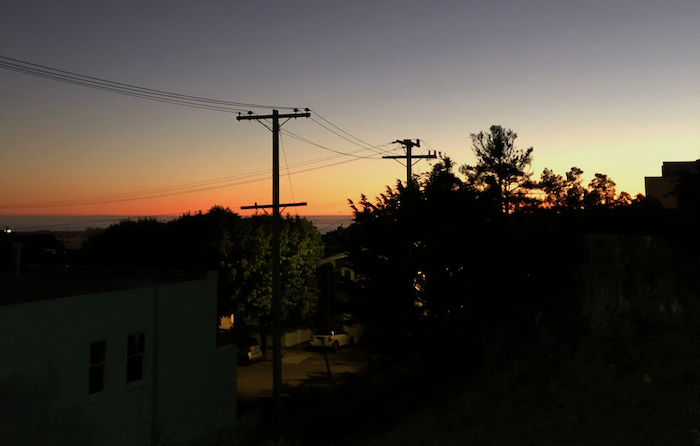
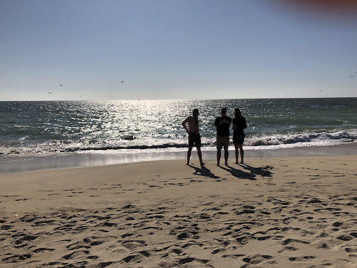
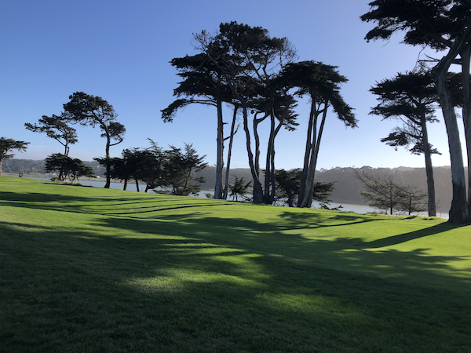

home
contact me
resume
projects
photos
Photos of The Sunset

Go to last slide
Go to next slide

Go to previous slide
Go to next slide
Go to previous slide
Go to next slide

Go to previous slide
Go to first slide